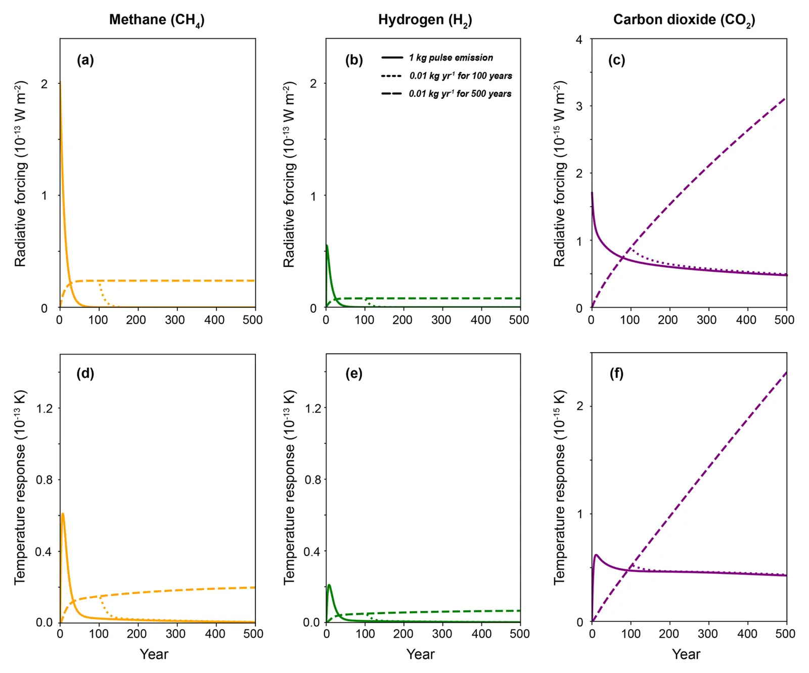

Comment on "Climate consequences of hydrogen emissions" by Ocko and Hamburg (2022)
Key finding. For the same quantity of emissions hydrogen has a consistently smaller climate impact than methane, and because it is short-lived its radiative forcing is proportional to the emission *rate* rather than to cumulative emissions — so the Earth cools rapidly once hydrogen emissions cease, whereas after CO2 emissions cease it keeps warming somewhat and stays warm for centuries.

What question did this research address?
Hydrogen is not itself a greenhouse gas but its leakage extends the lifetime of atmospheric methane and so warms indirectly. As hydrogen is proposed as a fossil fuel replacement, how much its leakage would undercut the benefit became an active question.
This commentary set out to add context to an earlier analysis: to derive the underlying equations explicitly, and to show what hydrogen emissions do to temperature as well as to time-integrated forcing.
What did we find?
The comment works through the derivation of the differential equations describing the radiative forcing of hydrogen emissions, which differ slightly from the equations relied on in earlier studies.
Where the original paper used a metric based on time-integrated radiative forcing from continuous emissions, this adds temperature and radiative forcing over coming centuries for both unit-pulse and continuous emission scenarios.
Hydrogen behaves like other short-lived species: continuous emissions produce a forcing proportional to the rate at which they are emitted. Carbon dioxide does not — its forcing tracks cumulative emissions.
That difference governs what happens when emissions stop. Ending hydrogen leakage cools the Earth rapidly; ending carbon dioxide emissions leaves the planet warming somewhat further and then warm for many centuries.
The conclusions agree with the paper being commented on. If methane is the feedstock for hydrogen production, near-term consequences depend primarily on methane leakage and only secondarily on hydrogen leakage.
Why does it matter?
It puts hydrogen leakage in its proper category. Treating it like a carbon dioxide problem overstates the commitment, because the forcing is rate-dependent and reversible on a timescale of years rather than centuries.
That reversibility is an argument about sequencing rather than about safety. A hydrogen system that leaks can be fixed later and the climate effect largely undone, which is not true of the carbon dioxide it displaces.
It also directs attention where the leverage is. If the hydrogen comes from methane, the methane leakage dominates — so the first thing to fix is upstream of the hydrogen entirely.
Citation
Lei Duan and Ken Caldeira (2023). Comment on "Climate consequences of hydrogen emissions" by Ocko and Hamburg (2022). Atmospheric Chemistry and Physics 23, 6011-6020.
Related
- How long does a carbon dioxide emission go on warming the planet?
- Dependence of climate and carbon cycle response in net zero emission pathways on the magnitude and duration of positive and negative emission pulses (Jayakrishnan et al., 2024)
- Stabilizing climate requires near-zero emissions (Matthews and Caldeira, 2008)
- Opportunities and constraints of hydrogen energy storage systems (Dowling et al., 2024)